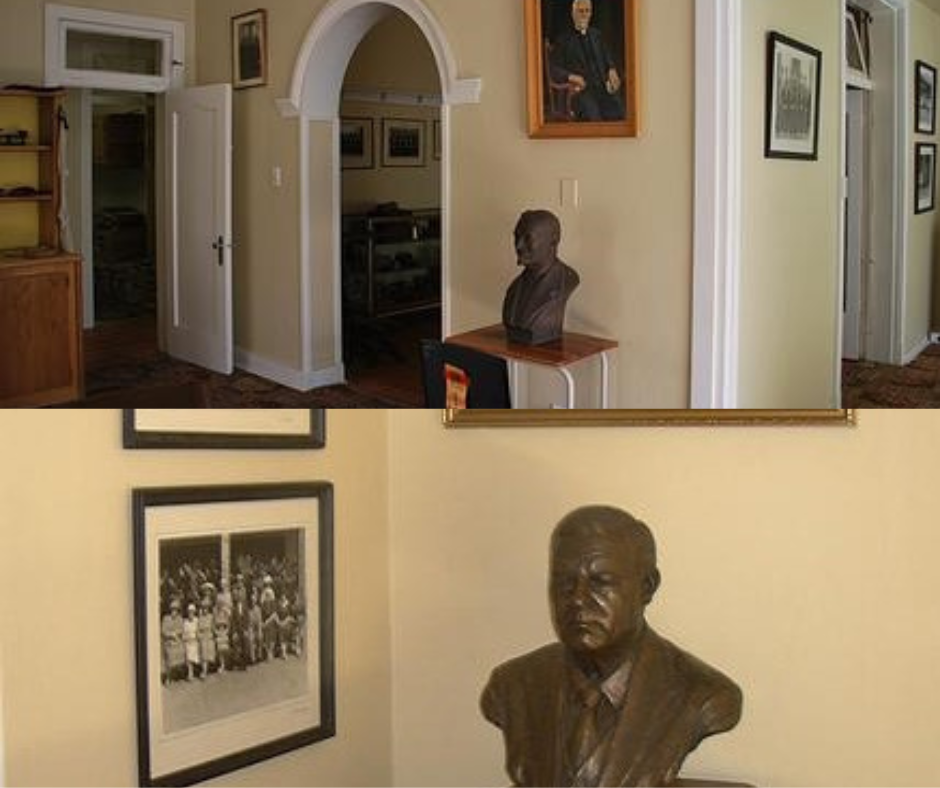

AFM stands for “Apostolic Faith Mission” (in Afrikaans: “AGS – Apostoliese Geloofsending“). The AFM exists since 1908 and is the first and largest Pentecostal church in the country – with 1.4 million members in SA and currently established in 28 countries of the world. “Pentecostal” means that it is a church who believes that the Spirit of God is given to believers to live dynamic and overcoming lives. It also implies that believers can demonstrate the character, love and power of their Lord, Jesus Christ, in their daily lives.
The AFM can be distinguished by two inseparable characteristics: The baptism in the Holy Spirit and the Great Commission. We received the Holy Spirit and His power to be missional (Acts1: 8). That’s why we refer to our assemblies as apostolic communities and our members as apostolic agents. We endeavor to inspire and mobilise our whole church to take the whole gospel to the whole world.

{kind=link}
Our AFM Values
There are many noble values that are applicable in the lives of decent people and very much so in the lives of Christians. However, in the context of the AFM, the following values gained pre-eminence:
Our Vision and Mission
Our Members
Our members are the most visible evidence of the AFM’s vision and mission – living powerful lives and carrying destiny-changing messages. Our members are “apostolic agents” sharing the message of God in every area of their lives.
Our Vision
We see a church accessible to all people, celebrating our unity and God-given diversity, empowering our members for caring and changing communities to the glory of God.
Our Mission
The AFM is a missional church – which is a community of God’s people that defines themselves as agents of God. It is rooted in John 3:16: “For God so loved the world that He gave His only begotten Son…” God sent His Son to redeem us. We confess that being missional is the activity of God Himself. This prime calling of the church is deeply embedded in the AFM since our birth in 1908.
Being a missional church is no longer understood as evangelising communities outside of the borders of South Africa. Being missional is understood as making a Christ-centred difference there where you live, work and function daily. The time to make an impact for Christ is now and the place is here.
We are dedicated to the true mission of our church:
The whole church taking the whole Gospel to the whole world.
Soaking our communities in the presence and principles of the Kingdom of God.
HISTORY OF THE AFM
n a country humiliated and impoverished by the Anglo-South African War of 1899-1902, a spiritual awakening became evident in 1908. As no existing church welcomed the revival in their ranks, God used John G. Lake and Thomas Hezmalhalch to start a new movement, the AFM in May 1908. Because of the openness to the work of the Holy Spirit and a strong missionary focus, the movement grew with leaps and bounds. More in-depth AFM History can be explored at: http://en.wikipedia.org/wiki/Apostolic_Faith_Mission_of_South_Africa
AFM Archive
Recently a large house at the AFM’s Auckland Park Theological College has been converted to exhibit the AFM’s rich collection of history. Contained within the exhibit are items such as John G Lake’s Bible and personal diary as well as the first minute-book of the Executive Council of 1908. There is information so unique that researchers from different overseas countries have already spent extensive times of research in the AFM archive. If you have a desire to visit the AFM Archive you can contact us.
